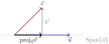

Skip to main content
Contents Embed Dark Mode Prev Up Next \(\newcommand{\foo}{b^{ar}}
\newcommand{\aug}{\fboxsep=-\fboxrule\!\!\!\fbox{\strut}\!\!\!}
\newcommand{\Nul}{\operatorname{Nul}}
\newcommand{\Col}{\operatorname{Col}}
\newcommand{\Row}{\operatorname{Row}}
\newcommand{\Span}{\operatorname{Span}}
\renewcommand{\det}{\operatorname{det}}
\newcommand{\rank}{\operatorname{rank}}
\newcommand{\proj}{\operatorname{proj}}
\newcommand{\lt}{<}
\newcommand{\gt}{>}
\newcommand{\amp}{&}
\definecolor{fillinmathshade}{gray}{0.9}
\newcommand{\fillinmath}[1]{\mathchoice{\colorbox{fillinmathshade}{$\displaystyle \phantom{\,#1\,}$}}{\colorbox{fillinmathshade}{$\textstyle \phantom{\,#1\,}$}}{\colorbox{fillinmathshade}{$\scriptstyle \phantom{\,#1\,}$}}{\colorbox{fillinmathshade}{$\scriptscriptstyle\phantom{\,#1\,}$}}}
\)
Section 6.2 Orthogonal Sets, Orthogonal Bases, and Projections
Handout 6.2 Orthogonal Sets, Orthogonal Bases, and Projections
Objectives: Topics
Objectives: Goals
Apply orthogonality concepts to:
compute orthogonal projections and distances,
express a vector as a linear combination of orthogonal vectors,
characterize bases for subspaces of \(\mathbb{R}^n\text{,}\)
construct orthonormal bases.
What are the special properties of the following basis for
\(\mathbb{R}^3\text{?}\)
\begin{equation*}
\frac{1}{\sqrt{11}}\begin{bmatrix}3\\1\\1\end{bmatrix},\quad
\frac{1}{\sqrt{6}}\begin{bmatrix}-1\\2\\1\end{bmatrix},\quad
\frac{1}{\sqrt{66}}\begin{bmatrix}-1\\-4\\7\end{bmatrix}
\end{equation*}
Definition 6.20 . Orthogonal Set.
A set of vectors
\(\{\vec u_1,\dots,\vec u_p\}\) is an
orthogonal set if
\(\vec u_j\cdot\vec u_k=0\) whenever
\(j\ne k\text{.}\)
Example 6.21 .
Fill in missing entries so that
\(\{\vec u_1,\vec u_2,\vec u_3\}\) is an orthogonal set:
\begin{equation*}
\vec u_1 = \begin{bmatrix}4\\0\\1\end{bmatrix},\qquad
\vec u_2 = \begin{bmatrix}-2\\0\\ \phantom{1} \end{bmatrix},\qquad
\vec u_3 = \begin{bmatrix} \phantom{-1} \\ \phantom{1} \\ \phantom{1} \end{bmatrix}
\end{equation*}
Theorem 6.22 . Linear Independence of Orthogonal Sets.
If
\(\{\vec u_1,\dots,\vec u_p\}\) is an orthogonal set of vectors, then:
\begin{equation*}
\left\lVert c_1\vec u_1 + \cdots + c_p\vec u_p\right\rVert^2
= c_1^2\lVert\vec u_1\rVert^2 + \cdots + c_p^2\lVert\vec u_p\rVert^2.
\end{equation*}
Furthermore, if all the vectors
\(\vec u_1\) are nonzero, then the set is linearly independent.
Theorem 6.23 . Expansion in an Orthogonal Basis.
If
\(\{\vec u_1,\dots,\vec u_p\}\) is an orthogonal basis for a subspace
\(W\text{,}\) then any
\(\vec w\in W\) can be written:
\begin{equation*}
\vec w = c_1\vec u_1 + \cdots + c_p\vec u_p,
\end{equation*}
\begin{equation*}
c_q = \frac{\vec w\cdot\vec u_q}{\vec u_q\cdot\vec u_q}.
\end{equation*}
Example 6.24 .
Let
\begin{equation*}
\vec x=\begin{bmatrix}1\\1\\1\end{bmatrix},\qquad
\vec u=\begin{bmatrix}1\\-2\\1\end{bmatrix},\qquad
\vec v=\begin{bmatrix}-1\\0\\1\end{bmatrix},\qquad
\vec s=\begin{bmatrix}3\\-4\\1\end{bmatrix}.
\end{equation*}
and let \(W\) be the subspace of \(\mathbb{R}^3\) that is orthogonal to \(\vec x\text{.}\)
(a) Check that
\(\mathcal{B} = \left\{\vec u,\vec v\right\}\) forms an orthogonal basis for
\(W\text{.}\)
(b) Verify that
\(\vec s \in W\text{.}\)
(c) Compute the expansion of
\(\vec s\) in the basis
\(\mathcal{B}\text{.}\)
Definition 6.25 . Orthogonal Projection.
For a nonzero vector
\(\vec u\) and vector
\(\vec v\text{,}\) the
orthogonal projection of \(\vec v\) onto \(\vec u\) is:
\begin{equation*}
\proj_{\vec u}(\vec v) = \frac{\vec v\cdot\vec u}{\vec u\cdot\vec u}\vec u.
\end{equation*}

Visualization of \(\operatorname{proj}_{\vec u}(\vec v)\) as the closest point in the span of \(\vec u\) to \(\vec v\text{.}\)
Theorem 6.26 .
Let \(\vec u\) be a nonzero vector. Then, the vector \(\vec w=\vec v - \operatorname{proj}_{\vec u}(\vec v)\) is orthogonal to \(\vec u\text{.}\) Furthermore,
\begin{equation*}
\|\vec v\|^2 = \|\proj_{\vec u}{\vec v}\|^2 + \|\vec w\|^2\text{.}
\end{equation*}
Example 6.27 .
Let
\(\vec y = \begin{bmatrix} 7 \\ 6 \end{bmatrix}\) and
\(\vec u = \begin{bmatrix} 4 \\ 2 \end{bmatrix}\text{.}\) Write
\(\vec y\) as the sum of two orthogonal vectors, one in
\(\Span\{\vec u\}\) and one orthogonal to
\(\vec u\text{.}\)
Example 6.28 .
Let
\(L\) be the line spanned by
\(\vec u=\begin{bmatrix}1\\1\\1\\1\end{bmatrix}\text{.}\)
(a) Find the projection of
\(\vec v = \begin{bmatrix} -3 \\ 5 \\ 6 \\ -4 \end{bmatrix}\) onto the line
\(L\text{.}\)
(b) How close is
\(\vec v\) to the line
\(L\text{?}\)
Definition 6.29 . Orthonormal Basis.
An
orthonormal basis for a subspace
\(W\) is an orthogonal basis in which each vector has length 1.
If
\(\{\vec u_1,\dots,\vec u_p\}\) is orthonormal and
\(\vec w\in W\text{,}\) then
\begin{equation*}
\vec w = (\vec w\cdot\vec u_1)\vec u_1 + \cdots + (\vec w\cdot\vec u_p)\vec u_p,
\end{equation*}
\begin{equation*}
\|\vec w\| =
\sqrt{
(\vec w\cdot\vec u_1)^2 + \cdots + (\vec w\cdot\vec u_p)^2
}.
\end{equation*}
Example 6.30 .
Let
\(W = \Span\left\{\begin{bmatrix} 1 \\ 1 \\ 1 \end{bmatrix}\right\}^\perp\text{.}\) Find the missing entries in an orthonormal basis:
\begin{equation*}
u=\frac{1}{\sqrt{\phantom{-1}}}
\begin{bmatrix}1\\0\\ \phantom{-1} \end{bmatrix},
\qquad
v=\frac{1}{\sqrt{\phantom{-1}}}
\begin{bmatrix} \phantom{-1} \\ \phantom{-1} \\ \phantom{-1} \end{bmatrix}
\end{equation*}
Definition 6.31 . Orthogonal Matrix.
An
orthogonal matrix is a
square matrix whose columns are orthonormal.
Theorem 6.32 .
An
\(m \times n\) matrix
\(U\) has orthonormal columns if and only if
\(U^TU = I_n\text{.}\)
Can
\(U\) have orthonormal columns if
\(n>m\text{?}\)
Theorem 6.33 . Mapping Properties of Orthogonal Matrices.
If
\(U\) is an orthogonal matrix, then:
Preserves length: \(\| U\vec x\| = \|\vec x\|\text{.}\)
Preserves angles: \((U\vec x)\cdot(U\vec y)=\vec x\cdot\vec y\text{.}\)
Preserves orthogonality.
Example 6.34 . Example.
\begin{equation*}
\begin{bmatrix}
\frac12 \amp \frac{2}{\sqrt{14}}\\
\frac12 \amp \frac{1}{\sqrt{14}}\\
\frac12 \amp \frac{-3}{\sqrt{14}}\\
\frac12 \amp 0
\end{bmatrix}
\begin{bmatrix}
\sqrt{5}\\
-2
\end{bmatrix}.
\end{equation*}